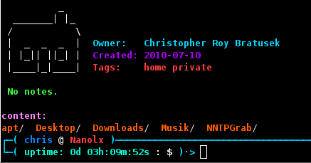

Chapter 8: BS-NG Functions
1 Admin functions
A set of more or less administrative functions
1.1 torswitch
Torswitch is a simple function for switching on or off
the Tor Union-Router globally, when using Privoxy
torswitch --on #turn on tor
torswitch --off #turn of tor
1.2 repoadd
RepoAdd is a script for adding debian-packages to an already
set-up apt-repo which uses reprepro to be organized
The paths it uses are set by environment-variables
REPO_HOME the root-directory of the apt-repo
REPO_DIST the dist you wan to add your packaes to
signing is done automatically
1.3 wipe
Wipe overwrites the given device with random numbers
Use this on an empty partition which you want to crypt-setup later
DON'T USE THIS ON PARTITIONS WHICH CONTAIN FILES (or are in use)!
1.4 remount
Simply remount a device with given options
1.5 xchown
XChown changes the owner of files recursively after asking for root-password
1.6 psgrep
Small script for grepping `ps' output but with nicer output than pgrep
1.7 pskill
Takes two arguements, 1st the process to psgrep for, 2nd any
additional arguements to pass to `kill'. Will display matches
before doing anything, not passing a process-id will simply leave
2 Conversion functions
Various functions for conversion
2.1 dos2unix
d2u: for converting dos-lineendings to unix-lineendings
u2d: for converting unix-lineendings to dos-lineendings
2.2 binary conversion
bin2oct: convert binary to octal number
bin2dec: convert binary to decimal number
bin2hex: convert binary to hexadecimal number
bin2all: overview of all three above
2.3 octal conversion
oct2bin: convert octal to binary number
oct2dec: convert octal to decimal number
oct2hex: convert octal to hexadecimal number
oct2all: overview of all three above
2.4 decimal conversion
dec2oct: convert decimal to octal number
dec2bin: convert decimal to binary number
dec2hex: convert decimal to hexadecimal number
dec2all: overview of all three above
2.5 hexadecimal conversion
hex2oct: convert hexadecimal to octal number
hex2dec: convert hexadecimal to decimal number
hex2bin: convert hexadecimal to binary number
hex2all: overview of all three above
2.6 algebra functions
round: round a number (use `,' as delimiter), 2nd arguement
is the number of decimal places to keep
radical: calculate the square-root of a number
power: calculate the nth power (2nd arguement) of a number (1st arguement)
3 Dirinfo functions
Dirinfo is some kind of cataloging directories, I've though I must have
it's currently a working prototype neither technically nor functionally finished
3.1 Dirinfo-Spec (Draft 1 Revision 2)
Example of a .dirinfo file:
Owner="Name Surname" # quotes are important!
Created=YYYY-MM-DD # this format is recommended
Type=type # supported types: book, document, download, game, home, mediaplayer, music, picture, share, video*
Tags=(tag1 tag2 tag3) # this format! anything is allowed
Notes="put your notes here" # quotes are important!
file-name is always .dirinfo in the desired directory
* if you want to have a different type, create a .dirascii
file for it. check $BSNG_RC_DIR/ascii/ for examples
3.2 LSCD
lscd is an enhanced version of the built-in cd. It supports
dirinfo, saving the last directory visited (so that one ends
up in the same directory again, when starting a new shell),
aswell as auto-displaying the content of the directory
Example output of lscd with a .dirinfo file (Type=home):

3.3 dirinfo_get_creation_date
... Normally this function would get the creation-date of a file ...
hah! linux-filesystems don't store it, therefore we fool ourselves
and get the time of the last modification instead
3.4 dirinfo_set_creation_date
... inserts the date gotten from _get_creation_date into the .dirinfo file
3.5 dirinfo_get_dirinfo
Internal function for getting values off a .dirinfo file (lscd)
3.6 dirinfo_display_info
If the info gotten from _get_dirinfo does not contain a Type field,
this function is to display the infos (lscd)
3.7 dirinfo_display_ascii
On the other hand, if there's a Type field, display the corresponding
ascii-art (as shown above) and the infos. If there's no BS-NG shipped
ascii-art that matches, check for .dirascii file to display, if that
also fails, call dirinfo_display_info instead (lscd)
3.8 dirinfo_index_db
Search $HOME for all .dirinfo files and create an index
use dirinfo_index --update instead (described later)
3.8.1 dirinfo_index_tags
Create a tag-index for all .dirinfo files listed in the index
user dirinfo_index --rebuild instead (described later)
3.8.2 dirinfo_index_types
Create a type-index for all .dirinfo files listed in the index
user dirinfo_index --rebuild instead (described later)
3.8.3 dirinfo_index_dates
Create a date-index for all .dirinfo files listed in the index
user dirinfo_index --rebuild instead (described later)
3.9 dirinfo_index
Function for updating, rebuilding and searching the index
dirinfo_index --update (call functions 3.8 - 3.8.3)
dirinfo_index --rebuild (call functions 3.8.1 - 3.8.3)
dirinfo_index --list (list all indexed directories)
dirinfo_index --search SEARCH_TYPE (search through the index,
SEARCH_TYPE is one of --tag, --type or --date)
3.10 dirinfo_create
Ugly query to create a .dirinfo file without the need to remember the syntax
4 Info functions
4.1 count_files
Function for counting files in the current directory, see --help
4.2 count_processes
Function for counting processes
4.3 show_battery_load
Function for displaying the battery load, via --acpi or --apm
4.4 show_cpu_load
Function for displaying the CPU-Load
4.5 show_ip
Function for displaying the ip-address of a given interface, see --help
4.6 show_mem
Function for displaying the current free/used ram in mb/percent, see --help
4.7 show_size
&nbps;Function for displaying the size of all files in the current directory
4.8 show_space
Function for displaying the free space of a given device, see --help
4.9 show_system_load
Function for displaying the system-load, see --help
4.10 show_tty
Function for displaying the current TTY (in a stylish manner)
4.11 show_uptime
Function for displaying the machine's uptime
4.12 system_infos
Function for getting various system informations, see --help
5 Media functions
5.1 geniso
Function for creating an ISO9660 image from a cd/dvd-drive
uses DD_OPTS and CD_WRITER variables
5.2 writeiso
Simple function for writing an ISO9660 image to a disc
uses cdrecord and CD_WRITER variable
5.3 youtube2ogg
Extracts the audio of .flv files to an OGG/Vorbis file (uses ffmpeg)
5.4 conv2avi
Simple function for converting a mencoder-supported video file to
AVI (XVid/Lame), uses mencoder-mt if available
6 Misc. functions
6.1 top10
Function for displaying your ten most-used commands
6.2 crypt
Function for "en/decrypting" text-files using ROT13 method
6.3 get_kernel
Function for grabbing kernel-sources, supports various options
-s VERSION for stable, -t VERSION for testing, -sg VERSION for
stable GIT, -tg VERSION for testing GIT, -z VERSION REVISION
for getting Zen kernel-patches
6.4 stop_watch
Simple stopwatch for bash (Ctrl-C to stop)
6.5 bashtips
Displays some useful tips about Bash
6.6 ls variants
Some variants of the ls-command
6.6.1 ll
Display ls-output as list, directories first
6.6.2 la
Normal ls, but hidden files included
6.6.3 l1
Normal ls, but one file per line (usefull for scripts)
6.6.4 lo
Display a list of files and their owner
6.6.5 lg
Display a list of files and their group
6.6.6 lm
Display the permissions of given files (human-readable and octal)
7 Random functions
7.1 random
Function for generating random numbers, use -l LENGTH
to set the length of the number, -r RANGE to set the
range of the number (so it will be between 0 and RANGE)
7.2 randompw
Function similar to random, but outputting strings
which may be used for passwords, eg randompw 16
generates a 16 chars long password containing letters
and numbers randompw 16 ! (note the !) additionally
add special charachters to the output
7.3 randomfile
Randomly select a file and output, alternatively if you
pass an application as arguement the file will be opened
with it. randomfile stores a history, for more see --help
8 Utility functions
8.1 bookmark
Create a bookmark for the current directory, eg bookmark example
will add a go-example command which will then go back to that directory
8.2 unmark
Remove a bookmark, eg unmark example will remove go-example
8.3 up
Easier way of going up several directories, eg instead of
cd ../../../../../ you do up 5
8.4 deadlink
Search current directory for dead links
8.5 empty
Search current directory for empty files
8.6 exchange
Exchange the value of two variables, eg exchange $X $Y
before: X=2 Y=4, afterwards X=4 Y=2
8.7 man2pdf
Create a PDF from a manual page
8.8 trunc_pwd
Used by the styles, to provide nicer pwd-output than \w and \W
8.9 xcp
Wrapper for cp that uses the last arguement as the name of
the destination directory and creates it if missing
8.10 xmv
Same as xcp, but for mv instead of cp
8.11 xdel
Deletes all files recursively matching the pattern without asking!
This only works on Bash 4.0+, eg xdel \~ .orig .diff
(special-chars, like ! or ~ need to be escaped)
8.12 xunalias
Wrapper for unalis, which doesn't err if an alias doesn't exist
9 Versioning functions
9.1 git_export
GIT version of svn export (export tree ready-to-use for release)
9.2 git_bzip
Create .tar.bz2 archive from the tree, ready-to-use for release
9.3 git_xz
Same as git_bzip but using XZ for compression
9.4 get_gnome
&nbps;Function for grabbing git.gnome.org repos
&nbps;uses GIT_GNOME_USER variable if you have an account
examples for maintainers: get_gnome -m nautilus
get_gnome -mb nautilus 2-30 (checkout branch 2-30)
examples for users: get_gnome nautilus
get_gnome -b nautilus 2-30 (checkout branch 2-30)
9.5 get_xfce
Same as get_gnome but for git.xfce.org, uses GIT_XFCE_USER
9.6 git_branch
Display the current branch
9.7 git_revision
Displays the current revision as 6-digit-number
9.8 git_action
Display the currently running action (eg merge)
9.9 get_kde
Same as get_gnome but for svn.kde.org (may not work for all)
uses SVN_USER_KDE variable
9.10 get_e
Same as get_gnome but for svn.enlightenment.org -b and -mb
options are missing, though uses SVN_USER_ENLIGHTENMENT
10 Internal functions/variables
10.1 BSNG_PREFIX
Environment-variable containing the installation-prefix of BS-NG
10.2 BSNG_RC_DIR
Environment-variable containing the path to the functions directory
10.3 BSNG_LOCKFILE
Environment-variable containing the path to the loCKfile
10.4 BSNG_VERSION
Environment-variable containing the version of BS-NG
10.5 BSNG_LOGFILE
Environment-variable containing the path to the loGfile
10.6 BSNG_DOCS
Environment-variable containing the path to the documentation
10.7 dbg_msg
Displays the debug messages on startup and stores them
10.8 dbg_view
Displays the debug-log
10.9 dbg_verbosity
Function for enabling/disabling the verbose debugging at startup
10.10 check_opt
Check optional dependencies for scripts, on run-time
10.11 BSNG_GCONF_READ
Environment-variable used by get_key/set_key with this
set you can pass eg: alias/one to them rather than
/apps/bashstyle/alias/one (used by nx-rc for better readability)
10.12 get_key
Get the value of a GConf-Key (listens to BSNG_GCONF_READ)
10.13 set_key
Set the value of a GConf-Key (listens to BSNG_GCONF_READ)
10.14 reset_key
Reset the value of a GConf-Key (listens to BSNG_GCONF_READ)
10.15 reset_config
Reset the BS-NG settings to defaults
10.16 search_key
Search for a GConf-Key